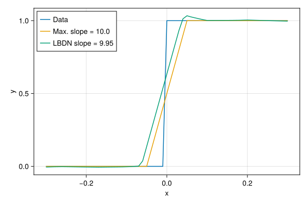

Fitting a Curve with LBDN
Full example code can be found here.
For our first example, let's fit a Lipschitz-bounded Deep Network (LBDN) to a curve in one dimension. Consider the step function function below.
\[f(x) = \begin{cases} 1 \ \text{if} \ x > 0 \\ 0 \ \text{if} \ x < 0 \end{cases}\]
Our aim is to demonstrate how to train a model in RobustNeuralNetworks.jl, and how to ensure the model naturally satisfies some user-defined robustness certificate (the Lipschitz bound). We'll follow the steps below to fit an LBDN model to our function $f(x)$:
- Generate training data
- Define a model with a Lipshitz bound (maximum slope) of
10.0 - Define a loss function
- Train the model to minimise the loss function
- Examine the trained model
1. Generate training data
Let's generate training data for $f(x)$ on the interval $[-0.3, 0.3]$ as an example. We zip() the data up into a sequence of tuples (x,y) to make training with Flux.jl easier in Step 4.
# Function to estimate
f(x) = x < 0 ? 0 : 1
# Training data
dx = 0.01
xs = -0.3:dx:0.3
ys = f.(xs)
data = zip(xs,ys)zip(-0.3:0.01:0.3, [0, 0, 0, 0, 0, 0, 0, 0, 0, 0 … 1, 1, 1, 1, 1, 1, 1, 1, 1, 1])2. Define a model
Since we are only dealing with a simple one-dimensional curve, we can afford to use a small model. Let's choose an LBDN with four hidden layers, each with 16 neurons, and a Lipschitz bound of γ = 10.0. This means that the maximum slope the model can achieve between two points should be exactly 10.0 by construction.
using Random
using RobustNeuralNetworks
# Random seed for consistency
rng = Xoshiro(0)
# Model specification
nu = 1 # Number of inputs
ny = 1 # Number of outputs
nh = fill(16,4) # 4 hidden layers, each with 16 neurons
γ = 10 # Lipschitz bound of 10
# Set up model: define parameters, then create model
model_ps = DenseLBDNParams{Float64}(nu, nh, ny, γ; rng)
model = DiffLBDN(model_ps)DiffLBDN{Float64, 4}(NNlib.relu, 1, (16, 16, 16, 16), 1, DenseLBDNParams{Float64, 4}(NNlib.relu, 1, (16, 16, 16, 16), 1, DirectLBDNParams{Float64, 5, 4}(([0.23214329779148102 0.0719260424375534 … 0.3692995011806488 -0.16851161420345306; 0.032969504594802856 0.3069685995578766 … 0.19318237900733948 0.42194488644599915; … ; 0.4491173326969147 0.05849267914891243 … 0.1397780478000641 0.22410519421100616; -0.26053479313850403 0.02476303093135357 … 0.3244051933288574 0.007594189140945673], [0.18762199580669403 -0.06916339695453644 … 0.15002691745758057 0.04052376374602318; 0.23277989029884338 0.1921708881855011 … 0.5823048949241638 -0.05324050039052963; … ; 0.07960578054189682 0.15175943076610565 … 0.001159293227829039 -0.15882113575935364; -0.1808565855026245 -0.028798241168260574 … -0.049029458314180374 -0.3480239510536194], [-0.10184371471405029 -0.21728064119815826 … -0.13547775149345398 0.0883968397974968; 0.01577475108206272 -0.006193812936544418 … 0.060338519513607025 -0.01741066202521324; … ; -0.10403311252593994 -0.06857604533433914 … 0.12543612718582153 -0.35763251781463623; -0.05627542361617088 -0.350466787815094 … 0.19697050750255585 0.20835211873054504], [-0.13576114177703857 -0.018142735585570335 … 0.02735416777431965 -0.0834735706448555; -0.3359338045120239 0.026308691129088402 … 0.03298195078969002 0.262193888425827; … ; 0.3991551101207733 0.07731478661298752 … 0.12188837677240372 -0.06325362622737885; 0.047693125903606415 0.02156795933842659 … -0.14517253637313843 0.11301697045564651], [0.47325843572616577; -0.3107141852378845; … ; -0.07755860686302185; 0.17173749208450317;;]), ([3.8679770865917193], [4.54311148183485], [4.420032279096377], [4.702422890986329], [1.1513038698092126]), ([0.28268763422966003, -0.08166024088859558, -0.27314531803131104, 0.09434209018945694, 0.15309739112854004, 0.22286637127399445, 0.3025576174259186, 0.0751579999923706, -0.2452767938375473, 0.110346719622612, 0.12290506064891815, 0.06624840945005417, 0.03049297444522381, 0.10244215279817581, -0.08695206791162491, -0.6913183331489563], [0.1146116629242897, -0.5848394632339478, -0.6417117118835449, -0.14238445460796356, 0.03927487134933472, 0.10752557963132858, -0.03809445723891258, -0.18293170630931854, 0.22789959609508514, 0.3728155195713043, 0.044067688286304474, 0.12969550490379333, 0.18762533366680145, 0.2588394284248352, -0.42021724581718445, 0.16310998797416687], [0.3764905333518982, 0.3642369508743286, -0.31068673729896545, 0.20346124470233917, -0.5264488458633423, -0.0096083739772439, 0.5759240984916687, 0.2415991872549057, 0.517515242099762, 0.3779756724834442, -0.27233588695526123, -0.5035727024078369, -0.18436455726623535, -0.5015978813171387, 0.21894845366477966, -0.18979574739933014], [0.03097386285662651, -0.39992856979370117, -0.1112615242600441, 0.09718159586191177, 0.2589584290981293, 0.616974949836731, -0.70039302110672, 0.5158131718635559, -0.5219748020172119, 0.3287447988986969, -0.1696680635213852, -0.03655477240681648, 0.14199382066726685, 0.6608154773712158, -0.5054290294647217, -0.023390086367726326]), ([0.49189260601997375, 0.24955427646636963, -0.037384793162345886, 0.2561871409416199, 0.3944902718067169, 0.24005882441997528, -0.529802143573761, -0.2869546711444855, 0.22372674942016602, -0.03216293826699257, 0.49543845653533936, -0.12308568507432938, 0.23369762301445007, -0.4927540421485901, 0.020140668377280235, 0.11665245145559311], [-0.137838214635849, 0.5356048941612244, -0.08660580217838287, 0.2035282850265503, 0.1396866887807846, 0.2598237097263336, -0.1632615327835083, 0.2171948403120041, -0.5365021824836731, -0.038209639489650726, 0.34096094965934753, 0.2984011471271515, -0.23905335366725922, 0.004434132017195225, 0.134390726685524, -0.4427524507045746], [-0.985066831111908, -0.04538029432296753, 0.5820320248603821, -0.36446279287338257, 0.4974323511123657, 0.09829656779766083, 0.11835838109254837, 0.05879458785057068, 0.1558355838060379, 0.335891455411911, 0.07752593606710434, -0.45726218819618225, 0.3145148456096649, 0.15404416620731354, 0.04038027301430702, -0.3101560175418854], [0.17520640790462494, 0.29499366879463196, -0.1913500279188156, 0.5369535684585571, -0.39205190539360046, -0.36523503065109253, -0.4426562190055847, 0.42528724670410156, -0.013607457280158997, -0.23488320410251617, -0.2932739555835724, -0.1482042372226715, -0.4213276207447052, 0.012250695377588272, -0.46392229199409485, 0.2742128372192383], [0.7359349131584167]), [2.302585092994046], false)))Note that we first constructed the model parameters model_ps, and then created a callable model. In RobustNeuralNetworks.jl, model parameterisations are separated from "explicit" definitions of a model used for evaluation on data. See the Direct & explicit parameterisations for more information.
We have also provided single LBDN layers with SandwichFC. Introduced in Wang & Manchester (2023), the SandwichFC layer is a fully-connected or dense layer with a guaranteed Lipschitz bound of 1.0. We have designed the user interface for SandwichFC to be as similar to that of Flux.Dense as possible. This may be more convenient for users used to working with Flux.jl.
For example, we can construct an identical model to the LBDN model above with the following.
using Flux
chain_model = Flux.Chain(
(x) -> (√γ * x),
SandwichFC(nu => nh[1], Flux.relu; T=Float64, rng),
SandwichFC(nh[1] => nh[2], Flux.relu; T=Float64, rng),
SandwichFC(nh[2] => nh[3], Flux.relu; T=Float64, rng),
SandwichFC(nh[3] => nh[4], Flux.relu; T=Float64, rng),
(x) -> (√γ * x),
SandwichFC(nh[4] => ny; output_layer=true, T=Float64, rng),
)See Section 3.1 of Wang & Manchester (2023) for further details.
3. Define a loss function
Let's stick to a simple loss function based on the mean-squared error (MSE) for this example. All AbstractLBDN models take an AbstractArray as their input, which is why x and y are wrapped in vectors.
# Loss function
loss(model,x,y) = Flux.mse(model([x]),[y])loss (generic function with 1 method)4. Train the model
Our objective is to minimise the loss function with a model that has a Lipschitz bound no greater than 10.0. Let's set up a callback function to check the fit error and slope of our model at each training epoch.
using Flux
# Check fit error/slope during training
mse(model, xs, ys) = sum(loss.((model,), xs, ys)) / length(xs)
lip(model, xs, dx) = maximum(abs.(diff(model(xs'), dims=2)))/dx
# Callback function to show results while training
function progress(model, iter, xs, ys, dx)
fit_error = round(mse(model, xs, ys), digits=4)
slope = round(lip(model, xs, dx), digits=4)
@show iter fit_error slope
println()
endprogress (generic function with 1 method)We'll train the model for 300 training epochs a learning rate of lr = 2e-4. We'll also use the Adam optimiser from Flux.jl and the default Flux.train! method.
# Define hyperparameters and optimiser
num_epochs = 300
lr = 2e-4
opt_state = Flux.setup(Adam(lr), model)
# Train the model
for i in 1:num_epochs
Flux.train!(loss, model, data, opt_state)
(i % 100 == 0) && progress(model, i, xs, ys, dx)
enditer = 100
fit_error = 0.0179
slope = 9.2106
iter = 200
fit_error = 0.0153
slope = 9.8445
iter = 300
fit_error = 0.0148
slope = 9.9504Note that this training loop is for demonstration only. For a better fit, or on more complex problems, we strongly recommend:
- Increasing the number of training epochs
- Defining your own training loop
- Using ParameterSchedulers.jl to vary the learning rate.
5. Examine the trained model
The final estimated lower bound of our Lipschitz constantt is very close to the maximum allowable value of 10.0.
using Printf
# Estimate Lipschitz lower-bound
Empirical_Lipschitz = lip(model, xs, dx)
@printf "Imposed Lipschitz upper bound: %.2f\n" get_lipschitz(model)
@printf "Empirical Lipschitz lower bound: %.2f\n" Empirical_LipschitzImposed Lipschitz upper bound: 10.00
Empirical Lipschitz lower bound: 9.95We can now plot the results to see what our model looks like.
using CairoMakie
# Create a figure
f1 = Figure(resolution = (600, 400))
ax = Axis(f1[1,1], xlabel="x", ylabel="y")
# Compute the best-possible fit with Lipschitz bound 10.0
get_best(x) = x<-0.05 ? 0 : (x<0.05 ? 10x + 0.5 : 1)
ybest = get_best.(xs)
ŷ = map(x -> model([x])[1], xs)
# Plot
lines!(xs, ys, label = "Data")
lines!(xs, ybest, label = "Max. slope = 10.0")
lines!(xs, ŷ, label = "LBDN slope = $(round(Empirical_Lipschitz; digits=2))")
axislegend(ax, position=:lt)
save("lbdn_curve_fit.svg", f1)CairoMakie.Screen{SVG}

The model roughly approximates the step function $f(x)$, but maintains a maximum Lipschitz constant (slope on the graph) below 10.0. It is reasonably close to the best-possible value, and can easily be improved with a slightly larger model and more training time.
The benefit of using an LBDN is that we have full control over the Lipschitz bound, and can still use standard unconstrained gradient descent tools lile Flux.train! to train our models. For examples in which setting the Lipschitz bound improves model performance and robustness, see Image Classification with LBDN and Reinforcement Learning with LBDN.